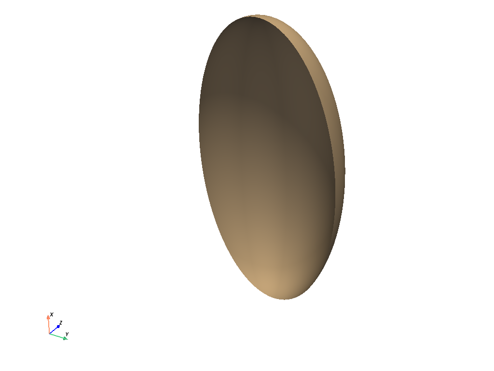

Note
Click here to download the full example code
Parametric Geometric Objects#
Creating parametric objects
from math import pi
import pyvista as pv
This example demonstrates how to plot parametric objects using pyvista
Supertoroid#
supertoroid = pv.ParametricSuperToroid(n1=0.5)
supertoroid.plot(color="tan", smooth_shading=True)
Parametric Ellipsoid#
# Ellipsoid with a long x axis
ellipsoid = pv.ParametricEllipsoid(10, 5, 5)
ellipsoid.plot(color="tan")
Partial Parametric Ellipsoid#
Pseudosphere#
pseudosphere = pv.ParametricPseudosphere()
pseudosphere.plot(color="tan", smooth_shading=True)
Bohemian Dome#
bohemiandome = pv.ParametricBohemianDome()
bohemiandome.plot(color="tan")
Bour#
bour = pv.ParametricBour()
bour.plot(color="tan")
Boy’s Surface#
boy = pv.ParametricBoy()
boy.plot(color="tan")
Catalan Minimal#
catalanminimal = pv.ParametricCatalanMinimal()
catalanminimal.plot(color="tan")

Conic Spiral#
conicspiral = pv.ParametricConicSpiral()
conicspiral.plot(color="tan")
Cross Cap#
crosscap = pv.ParametricCrossCap()
crosscap.plot(color="tan")
Dini#
dini = pv.ParametricDini()
dini.plot(color="tan")
Enneper#
enneper = pv.ParametricEnneper()
enneper.plot(cpos="yz")
Figure-8 Klein#
figure8klein = pv.ParametricFigure8Klein()
figure8klein.plot()
Henneberg#
henneberg = pv.ParametricHenneberg()
henneberg.plot(color="tan")
Klein#
klein = pv.ParametricKlein()
klein.plot(color="tan")
Kuen#
kuen = pv.ParametricKuen()
kuen.plot(color="tan")
Mobius#
mobius = pv.ParametricMobius()
mobius.plot(color="tan")
Plucker Conoid#
pluckerconoid = pv.ParametricPluckerConoid()
pluckerconoid.plot(color="tan")
Random Hills#
randomhills = pv.ParametricRandomHills()
randomhills.plot(color="tan")
Roman#
roman = pv.ParametricRoman()
roman.plot(color="tan")
Super Ellipsoid#
superellipsoid = pv.ParametricSuperEllipsoid(n1=0.1, n2=2)
superellipsoid.plot(color="tan")
Torus#
torus = pv.ParametricTorus()
torus.plot(color="tan")
Circular Arc#
pointa = [-1, 0, 0]
pointb = [0, 1, 0]
center = [0, 0, 0]
resolution = 100
arc = pv.CircularArc(pointa, pointb, center, resolution)
pl = pv.Plotter()
pl.add_mesh(arc, color='k', line_width=4)
pl.show_bounds()
pl.view_xy()
pl.show()
Extruded Half Arc#
pointa = [-1, 0, 0]
pointb = [1, 0, 0]
center = [0, 0, 0]
resolution = 100
arc = pv.CircularArc(pointa, pointb, center, resolution)
poly = arc.extrude([0, 0, 1])
poly.plot(color="tan", cpos='iso', show_edges=True)
C:\Users\afernand\Documents\repositories\pyvista\.venv\lib\site-packages\pyvista\core\filters\poly_data.py:2787: PyVistaFutureWarning: The default value of the ``capping`` keyword argument will change in a future version to ``True`` to match the behavior of VTK. We recommend passing the keyword explicitly to prevent future surprises.
warnings.warn(
Total running time of the script: ( 0 minutes 4.120 seconds)